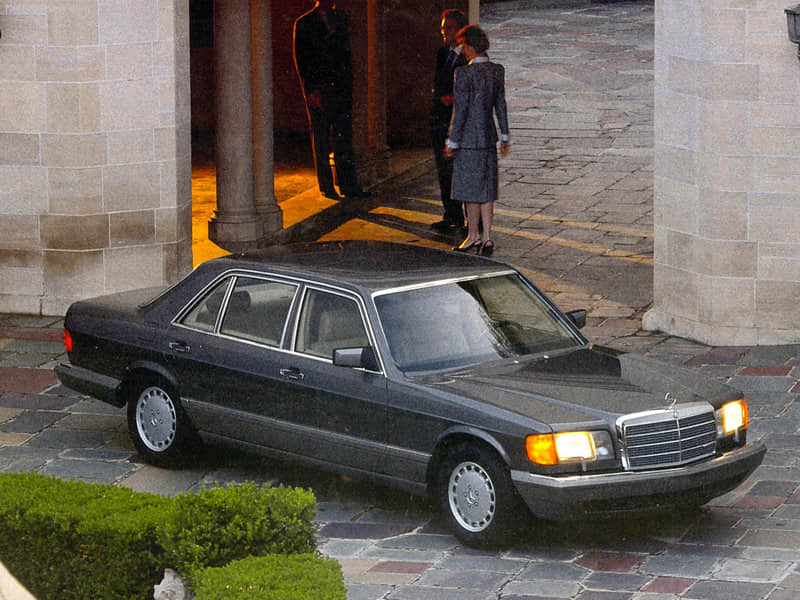

History of S-Class
-
W187
(1951-1955)
第一代奔驰S级于1951年推出。梅赛德斯·奔驰公司的前身戴姆勒·奔驰在第一届法兰克福车展上隆重推出了220和300两款产品，这两款车型即是第一代S级，但是在当时使用Ponton的名称，而没有使用S-Class这个称呼，但这代表着S级辉煌时代的开始。当时的220搭载了排量2.2升的全新6缸发动机，最大功率80马力。1954年，梅赛德斯·奔驰推出了220a系列车型，装备了改进后的6缸发动机。此外，为W196F1赛车开发的具有低枢轴点的单铰接点摆动桥也首次用于梅赛德斯·奔驰的量产轿车，进一步提高了操控性。
-
W180/128
（1954-1959）
1954年3月，奔驰在180（W120）系列车型的基础上推出了同样名为“Ponton”的220 a轿车（W180），奔驰220 a总体设计上更具现代化。造型设计方面与1953年推出的奔驰180车型可谓一脉相承，而其略微不同的比例设计则赋予整车无可置疑的优雅气质。 奔驰220 a的轴距较奔驰180系列增加了170毫米，其中70毫米扩大了后排座椅的腿部空间，另外100毫米扩展了车身前端长度，从而为六缸发动机提供必要的安装空间。在奔驰220 a面世两年之后，采用“浮筒式”车身设计的奔驰219（W105）和220 S（W128）车型于1956年3月问世。“浮筒式”车身能够提供更为充裕的车内空间、更好的外部视野以及前所未有的舒适性。另外，车辆整体刚性大幅提高，并且车身重量有所降低，在显著提升安全性的同时，保证了更高的燃油经济性。
-
W111
(1959-1965)
1959年8月，奔驰宣布对原有乘用车进行彻底改进。在“力争打造细分市场全新六缸发动机”口号的推动下，底盘代号W111的奔驰220 b、220 Sb和220 SEb随之相继问世。除了在具体配置上各有差异之外，三款新车型的发动机也不尽相同。第三代奔驰S级拥有非常宽敞和优雅的车身造型，垂直设计的大灯与奔驰标示性的进气格栅遥相呼应。车头发动机盖边缘恰到好处的被设计在大灯中线处，将整车层次刻画的相当清晰。真材实料的保险杠采用大面积镀铬装饰，镀铬的应用仍然为彰显奔驰S级高贵气质的最佳表现手法。与同时代其他车型不同的是，第三代奔驰S级在追求时尚外形设计的同时，为豪华汽车的被动安全树立了全新标准。1955年，奔驰公司启动了一个新型豪华车项目，该项目不设预算限制，力求打造一款创造汽车美学和工程学典范的豪华车型。这就是被誉为“世界上最美的汽车”的奔驰600。上世纪50年代至60年代初，世界级豪华轿车主要被凯迪拉克和劳斯莱斯所占据，各国元首礼宾车也多以美国车为主。在奔驰600诞生之前，奔驰并未绝对树立其作为世界级豪华轿车的王者地位。
-
W108/109
（1965–1972）
1965年8月，奔驰推出了由Paul Bracq设计的新一代旗舰车型，简洁的线条回归了奔驰的经典设计。1968年3月，梅赛德斯-奔驰再攀新高，推出了顶级车型300 SEL 6.3。该车采用了梅赛德斯-奔驰600的8缸发动机和自动变速器。因为之前没有宣布任何消息，300 SEL 6.3在日内瓦车展的首次亮相即引发了强大的轰动效应。在外形上，300 SEL 6.3的最显著的特点在于采用了更宽的轮胎、双卤素大灯以及辅助远光灯组。发动机的功率达到了250马力（184千瓦），而500牛顿·米的强大扭矩使300 SEL 6.3从0到100公里/小时的加速时间仅需8秒，最高车速更达225公里/小时，成为当时世界上车速最快的量产型轿车。
-
W116
（1972–1980）

1972年是梅赛德斯-奔驰S级发展史上一个里程碑式的年代，当年内部编号为W116系列的280 S、280 SE和350 SE轿车正式上市，并首次被官方正式命名为“梅赛德斯-奔驰S级轿车”。1975年5月，梅赛德斯-奔驰发布了该系列的全新顶级车型——450 SEL 6.9，它也是梅赛德斯-奔驰300 SEL 6.3车型的真正继承者。强劲有力的6.9升V8发动机由梅赛德斯-奔驰极为成功的6.3升发动机研发而来，实现了高达286马力（210千瓦）的功率输出和549牛·米的最大扭矩，最高时速可达230公里/时，其6.9升的排量也是迄今为止排量最大的量产型德国乘用车。在安全方面,这一代S级轿车运用了多项创新科技，其中包括全球首款量产的ABS防抱死制动系统、四辐式安全方向盘、防碰撞油箱、安全车门把手、以及防污设计的侧窗和尾灯。ABS系统已经是司空见惯的常规配置，但在当时，ABS刚一上市即引起了巨大的轰动。这一代S级系列的继任者——W 126 车型于1979年9月在法兰克福国际车展上亮相，但W116系列并没有立即停止生产，而是在1980年4-9月期间逐步退出。
-
W126
（1979–1991）
1979年9月，戴姆勒-奔驰在法兰克福国际车及配件展上推出了新一代S级轿车。W 126系列最初由7个车型组成：有四款发动机（从2.8升115 kW/156马力的6缸化油器发动机，到5.0升176 kW/240马力的燃油直喷式V8轻结构合金发动机）以及另外两款—普通版及加长版的车型。加长版车型的轴距增加了140毫米，使后排腿部空间及后门入口宽度得到明显改善。与前辈车型一致，这一代奔驰S级同样在安全性能方面下有不少功夫。得益于全新的设计理念，乘客车厢能够抵御时速55公里下发生的正面撞击，而W 126系列轿车也由此成为全球第一款达到正面撞击抵御标准的轿车。在W 126系列推出两年后，梅赛德斯-奔驰S级轿车率先应用驾驶员安全气囊，并在1985年的车型改进组件中增加了前排乘客安全气囊，成为汽车安全设计领域的又一开创。此车系的发动机中最引人注目的创新就是5.6升8缸发动机，该款发动机是通过增加了5.0升V8发动机的冲程而开发出来的，输出功率可达200千瓦（272马力）。配备有这种发动机的车型 560 SEL和560 SEC 是梅赛德斯-奔驰当时生产的动力最强劲的量产车型。
-
W140
（1991–1998）
1991年3月，新一代S级轿车（W140系列）在日内瓦车展上首次亮相。与W126系列前身系列车型以及几代梅赛德斯-奔驰高级系列车型一样，新一代S级轿车普通版亦推出了长轴距车型，轴距加长100毫米以增加后排腿部空间。全新设计6.0升V12发动机是梅赛德斯-奔驰为轿车批量生产的第一款12缸发动机，是当时动力最强劲的乘用车发动机之一，其额定功率输出达300千瓦（408马力），峰值扭矩达580牛米，并在1600转/分钟时，即可实现高达500牛米的强劲扭矩。1993年6月, 该车型与其它轿车系列车型进行了统一化设计，将“S”字样放在三位数号码之前，而且字母后缀“E”，“D”，“L”被省略了。例如，500 SE变成了S 500，并根据新的命名系统，600 SEL更名为S 600长轴距。从此，行李箱处只注明车型级别和发动机排量，而不标注车身版本（普通或长轴距版）---大家仔细看就不难察觉。最显着的变化是重新设计了4.2升和6缸机车型。使用数字采取了四舍五入法，统一到百位，以提高整体形象的统一性，所使用的数字与实际排量对应。
-
W220
（1998–2005）
在1998年9月巴黎车展上，梅赛德斯-奔驰发布了以W 220 为编号的6款S级轿车，与前辈车型相比，W 220 系列给人的直观印象是更为精致。亮相之初，全新S级轿车即向公众展示了三十多项创新技术成果，其中包括限距智能巡航自动控制系统、带交通报警功能的导航系统以及气缸自动关闭技术。2002年，梅赛德斯-奔驰推出了全球首创的PRE-SAFE预防性安全系统，并将其率先装备到S轿车上。作为如今新一代S级轿车的重要配置之一，带自适应减震系统的AIRMATIC空气悬挂也最早出现在第八代S级轿车中。此外，车辆还配有全新研发而成的四连杆前悬挂系统和ESP电控车辆稳定行驶系统。从2002年车型起，S级轿车在其所有车型上开始标配COMAND驾驶室管理及数据系统，同时在其顶级S 600车型上加装自动导航系统。2002年秋季，梅赛德斯-奔驰继续对W 220车型的动力系统进行升级，并开始在6缸和8缸S级轿车上装备4MATIC全时四轮驱动系统。在ESP?（电控车辆稳定行驶系统）、ASR（加速防滑系统）和4ETS（四轮驱动电子牵引系统）电子行驶安全系统的辅助下，4MATIC让S级轿车轻松应对各种复杂路况的挑战。而更重要的是，双涡轮增压V 12发动机首次应用于梅赛德斯-奔驰S 600车型。这款令人血脉喷张的高性能发动机能够产生高达500马力（368千瓦）的超强输出功率和扭矩为800牛·米的惊人扭矩。
-
W221
（2005–2013）
第九代S级轿车拥有众多革命性的创新科技成果，提供了最高级别的安全性和前所未有的舒适性，应用了包括第二代预防性安全系统(PRE-SAFE?）、首次搭载的7速自动变速器(7G-Tronic)、进一步改进的空气悬挂系统(AIRMATIC)、功能全面增强并有中文菜单显示的驾驶舱管理和数据系统(COMAND)等，充分展现了当今国际汽车制造领域的巅峰技术。作为全球豪华轿车标准的缔造者，全新S级轿车还成为豪华车领域第一个通过环保认证的车型，与以前车型相比，由可再生原材料制成的部件总重量提高了73%左右；同时，尾气排放远远低于目前的欧Ⅳ标准。除拥有以上高端技术外，与其它国家相比，进入中国市场的全新S级轿车还将采用更高的标准配置。全景天窗、复式氙气大灯、无钥匙启动系统、主动通风式电热豪华座椅等在国外被列为选装的配置，在进入中国市场时均将升级为标准配置。此外，国外选装的、全球首次应用到全新S级的夜视辅助系统，也将作为标准配置率先应用在S500L加长版上，提升了车辆的整体舒适性与安全性。全新S级轿车的发动机性能也有大幅度的提升，输出功率和扭矩分别提高了26%和15%，油耗同时降低了9%。新一代S级轿车的焦点车型S 400 HYBRID，是世界首款量产的锂离子电池混合动力车型。
-
W222
（2013-）
奔驰新一代S级整车的线条非常优雅，全车所有灯具均采用LED光源。前脸部分的大尺寸横向进气格栅依旧保留，造型更加立体和丰富。新一代S级开始启用全液晶显示仪表盘，高达12.3英寸的屏幕可以显示多种数据，而中控台部分同样搭载了一台12.3英寸的大尺寸屏幕，用以显示COMMAND信息娱乐控制系统。全新的方向盘，全新的中控台，全新的座椅造型等都进一步提升了奔驰S级在驾驶方面的舒适度。后排舒适性上，新一代S级首次引入四座版本，把后座的舒适度放到了第一位的需求上，其顶级手工缝制的真皮座椅宽大且舒适，带有十向电动调节控制，同时还具备通风加热等功能，而特殊优化的头部靠枕、腿部支撑都让舒适度再一次提上了一个级别，而顶配车型还搭载了魔术车身，把旅途变为真正的享受。